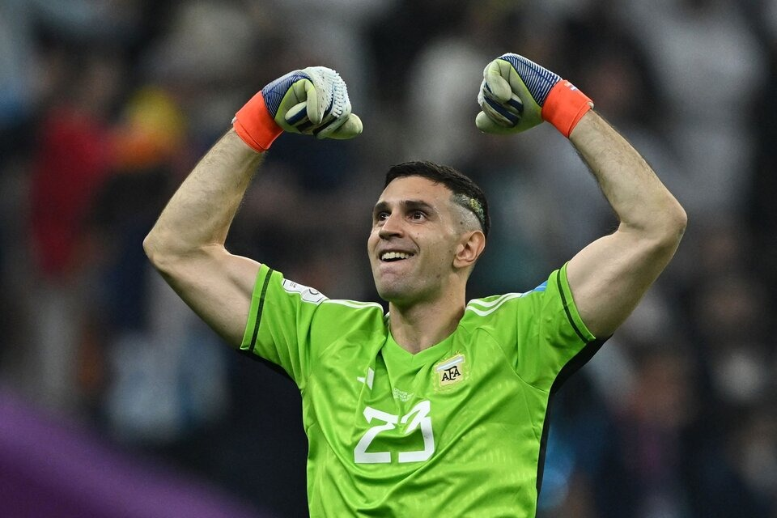

En Qatar 2022, la camiseta argentina . Las mangas serán blancas con las tradicionales tiras negras, el borde de ellas también será del mismo
color. El cuello volverá a su forma circular negra, pero más fino que en ocasiones previas. La novedad estará en la parte trasera, donde las
franjas albicelestes tendrán un ancho irregular.
El modelo que se utilizará en el Mundial podría compararse bastante con el que se usó en Brasil 2014. Este de ahora tiene en el frente tres
bastones celestes con un leve degradé de arriba hacia abajo y los detalles son en negro: los puños de la manga, el cuello, las tres tiras y
hasta el logo de Adidas. Lo más distintivo está, probablemente, en la espalda, donde en vez de tres bastones como en el frente hay dos
a los costados, y el del medio es en realidad una especie de bandera: tiritas celeste, blanca y celeste que van desde arriba hacia
abajo y con el sol en la parte más alta de la camiseta, a la altura del cuello.

El Dibu y el resto de los arqueros (Armani, Musso y Rulli se disputan dos lugares) usarán la camiseta de color verde, con
unos pequeños detalles muy similares a los que tiene la remera celeste y blanca.
